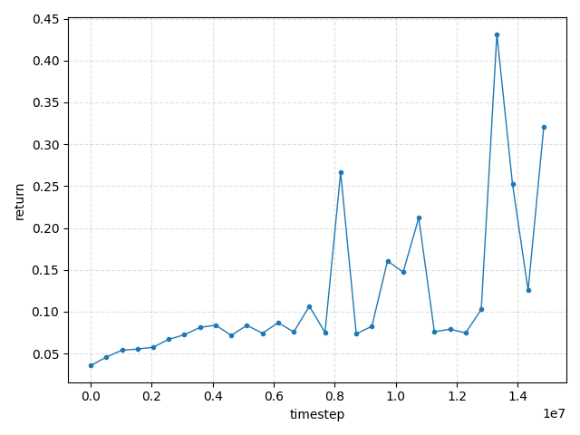
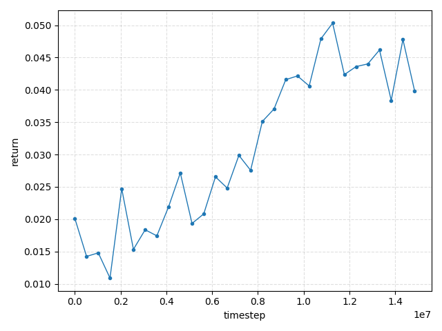

Kirisute Finger Two Stage PPO Result
RunPod: root@38.147.83.26 -p 18030。左右 finger の visual/collision を kirisute mesh に変更した URDF で実行。
Scalar Summary
| Stage | Env | Best eval return | Best checkpoint | Final eval return | Final checkpoint |
|---|---|---|---|---|---|
| stage1 | MyDualCardboardCabinet-v1 |
43.163879 @ 13,312,000 steps | ckpt_131.pt |
32.072079 | final_ckpt.pt |
| stage2 | MySingleCardboardCabinetRandomized-v1 |
5.033479 @ 11,264,000 steps | ckpt_111.pt |
3.981696 | final_ckpt.pt |
Best Eval Videos
Stage1: ckpt_131
Stage2: ckpt_111
Return Curves
Stage1

Stage2
